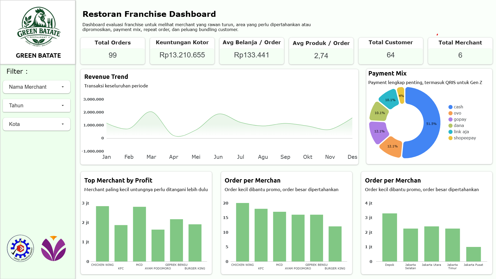

Evaluasi performa merchant dalam satu jaringan franchise
Dashboard evaluasi ini dirancang khusus untuk melihat performa berbagai merchant dalam satu jaringan franchise. Laporan ini membantu manajemen mengidentifikasi area yang perlu dipromosikan, memantau payment mix, serta melihat peluang bundling produk berdasarkan perilaku transaksi pelanggan.

Analisis performa setiap merchant & cabang
Analisis metode pembayaran dari transaksi
Mapping distribusi pesanan per wilayah
Pembuatan dashboard interaktif Looker Studio
Merchant Terintegrasi
Metode Pembayaran
Efisiensi Operasional